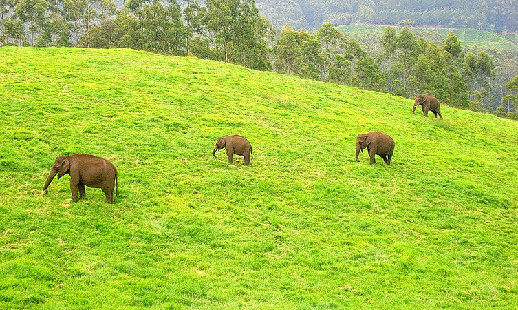

dukki is Kerala's second largest district and has been blessed with numerous natural wonders. The high valleys and hill ranges of this landlocked region are fed by three major rivers - Periyar, Thalayar and Thodupuzhayar and their tributaries. Its forest still hosts many tribes and over half of the terrain is still covered with forests. People love going to the gigantic arch dam for getting its mesmerising view. Blessed with a wide range of trekking trail, each of them offers a spectacular view of the valley below and ranges above of Idukki. The place is also renowned for its exotic flora and fauna and one can come across many rare species while visiting Idukki.
Away from the hustle and bustle of the cities, the Idukki Wildlife is located in the Thodupuzha and Udumpanchola taluks of Idukki at an altitude of 450 – 750 ft above the sea level.
The sanctuary, flanked on 3 sides by the tranquil waters of Idukki Lake, is housed amidst picturesque settings of tropical evergreen & semi-evergreen forests, meadows, and deciduous trees.The Wildlife Sanctuary, one of the places to visit in Idukki, houses hordes of wild elephants.
The Idukki dam is constructed across the Periyar River, in a valley between the Kuravan and Kurathi hills in Kerala. The awe-inspiring, majestic dam, which stands at 167.68 meters (550 ft), is one of the highest arch dams in Asia. The dam, which is one of the Idukki tourist places, constructed by the Kerala government in 1975 and supports 780 MW hydroelectric power station that draws electricity from this dam. The sheer magnitude of the structure along with the mountains, verdant vegetation, and 60 sq. km placid lake, which is created by the 3 dams, Idukki dam, Cheruthoni and Kulamavu, captivate the visitors.
The cascading waters from a height of 1500 meters amidst the hills enveloped in lush greenery, adorns the skies with rainbows that takes the visitors’ breath away. A favorable hunting ground for photographers, the Keezharkuthu falls also referred to as rainbow falls immerse the visitors in an inexplicable experience.
The contiguous forests are believed to be endowed with medicinal plants and herbs, which are used by tribal inhabitants from centuries. It is also home for rich fauna.The rocky terrain of the Keezharkuthu, one of the Idukki tourist places, is renowned for its exploration activities such as rock climbing, mountaineering, camping, and trekking.